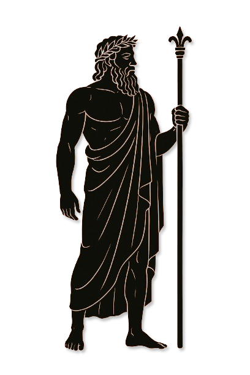
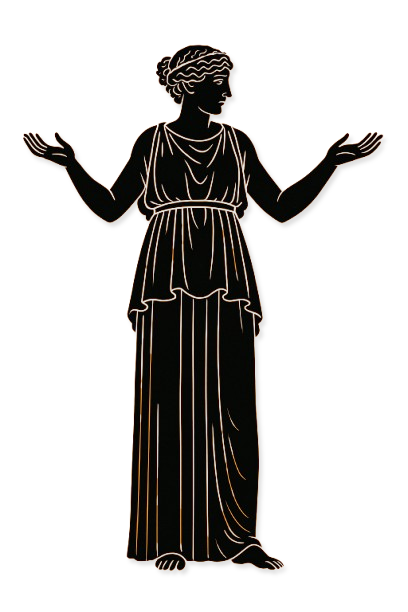
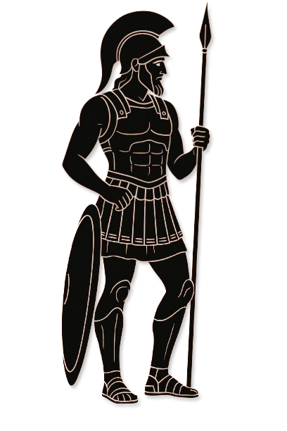
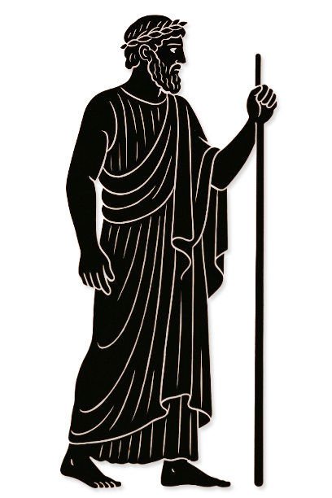
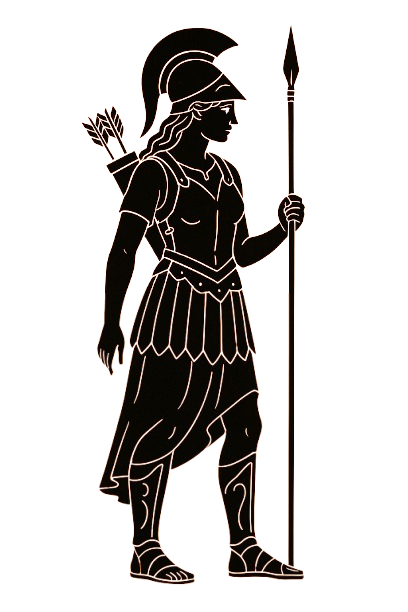
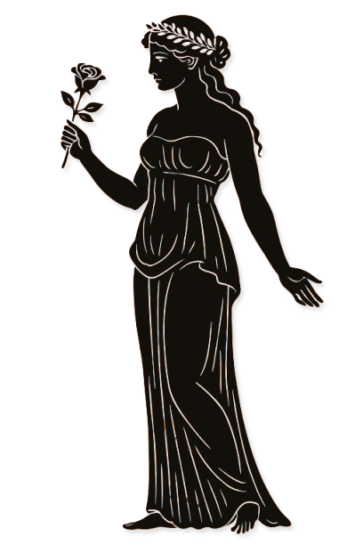
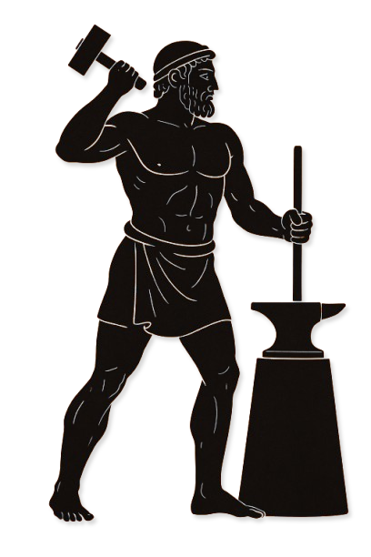
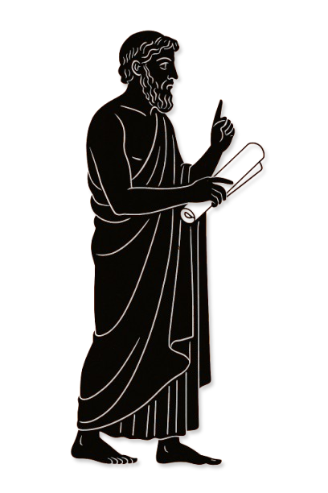
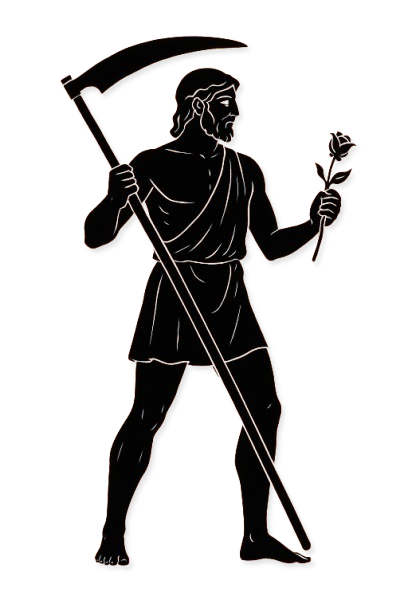

Ordeus
Vergleich im CodexOrdan
II · Synode Archivblatt 05
Kirche des Imperiums
Neun Titanen, Zephyr als Patrongott und die Verbindung göttlicher wie infernaler Aspekte prägen den Glauben des Imperiums.

Gestalten dieser Überlieferung
Die Namen, Bildnisse und Aspektzuordnungen dieser Glaubensrichtung. Verweise führen zu den entsprechenden Überlieferungen im Glaubenscodex.









Zu dieser Suche wurde kein Eintrag gefunden. Versucht einen anderen Namen oder öffnet wieder alle Kapitel.
Die Celestische Synode ist die vorherrschende Religion auf den südlichen Kontinenten, die neben den Hohen Drei eine bedeutende Rolle spielt. Dieser Pantheon entstand als Ergebnis eines Kompromisses zwischen der Religion der Hohen Drei und der Alerischen Kirche, als das alte Kaiserreich zerfiel und das Imperium an seine Stelle trat. Die Vereinigung dieser beiden Glaubensrichtungen führte zur Schaffung einer neuen, harmonisierten Religion, die die Merkmale beider Traditionen in sich vereint.
Wie die Alerische Kirche mit ihren Neun Göttlichen, verehrt auch die Celestische Synode neun primäre Gottheiten, die das göttliche Spektrum von Schöpfung bis zum Schutz der Menschen abdecken. Diese Götter reichen vom allmächtigen Vater bis hin zum weise und schützend agierenden Hüter. Die Synode sieht in diesen Gottheiten nicht nur spirituelle Führer, sondern auch Wegweiser, die die Menschen durch die Herausforderungen des Lebens leiten.
Eine besondere Rolle in dieser Religion spielt der Patrongott Zephyr. Zephyr ist das zentrale Bindeglied zwischen den Sterblichen und den Göttern und verkörpert das direkte Vermitteln göttlicher Weisheit und Kraft an die Gläubigen. Innerhalb der Hierarchie der Synode steht Zephyr direkt nach dem Kaiser und dem Pontifex und wird als die höchste religiöse Instanz angesehen, an die sich die Menschen wenden können. Zephyr wird als der Gott betrachtet, der das Gleichgewicht zwischen den göttlichen Kräften wahrt und den Menschen die Gunst der Götter sichert.
Die Celestische Synode verbindet alte Traditionen mit neuen Glaubensvorstellungen und hat sich so als eine flexible und anpassungsfähige Religion etabliert, die in einer sich verändernden Welt Bestand hat. Sie bietet den Gläubigen nicht nur spirituellen Trost, sondern auch eine Struktur, die sowohl persönliche Hingabe als auch gesellschaftliche Stabilität fördert.
Die Doktrin der Celestischen Synode zeichnet sich durch ihre besondere Herangehensweise an das Göttliche aus, die sich stark von anderen Glaubensrichtungen unterscheidet. Ähnlich wie im Nord Pantheon existiert in der Celestischen Synode keine klare Trennung zwischen dem Göttlichen und dem Infernalen. Stattdessen werden Wesen, die in anderen Religionen als Gegensätze angesehen würden, in der Synode als verschiedene Aspekte desselben Wesens betrachtet. Ein prägnantes Beispiel dafür ist die Verschmelzung von Der Hedonist (Sanguine) und Die Maid, Lytheris . In der Alerischen Kirche werden diese beiden als gegensätzliche Kräfte betrachtet, wobei Lytheris für Reinheit und Liebe steht und Sanguine für Laster und Verführung. In der Celestischen Synode jedoch werden sie als unterschiedliche Erscheinungsformen derselben göttlichen Essenz verehrt, ohne Unterscheidung zwischen gut und böse.
Darüber hinaus verehrt die Synode neben den neun Hauptgöttern auch eine Vielzahl von Nebengöttern, die aus der Sicht der Alerischen Kirche sowohl göttlicher als auch infernaler Natur sein können. Diese Nebengötter, die oft in den Schatten des Hauptpantheons stehen, spielen dennoch eine bedeutende Rolle im spirituellen Leben der Gläubigen. Sie werden in der Synode ganz normal angebetet, ohne die dualistische Trennung, die in anderen Religionen wie der Alerischen Kirche strikt durchgesetzt wird. Diese flexible und inklusive Haltung ermöglicht es den Gläubigen, eine vielschichtige und dynamische Beziehung zu ihren Göttern aufzubauen, die nicht durch starre dogmatische Grenzen eingeschränkt ist.
Ein zentraler Aspekt der Celestischen Synode ist die Verehrung von Zephyr , dem Patrongott , der als eine Art Hohepriester der Menschheit angesehen wird. Zephyr nimmt eine einzigartige Rolle ein, indem er sowohl als Vermittler zwischen den Göttern und den Menschen als auch als Symbol für die Einheit der göttlichen und menschlichen Sphären dient. Obwohl Zephyr als Kopf der Kirche verehrt wird, greift er nur selten direkt in die Geschicke der Menschen ein. Vielmehr ist seine Präsenz als spiritueller Führer und Beschützer spürbar, der den Gläubigen Orientierung und einen moralischen Kompass bietet, ohne deren Handlungen strikt zu lenken.
Diese Doktrin der Celestischen Synode bietet den Gläubigen eine außergewöhnliche Flexibilität in ihrem Glauben und ihrer Anbetung, während sie gleichzeitig eine tief verwurzelte Verbindung zu den göttlichen Kräften pflegt, die sowohl die hellen als auch die dunklen Aspekte des Lebens umfassen.
Ein gravierender Unterschied zwischen der Celestischen Synode und der Alerischen Kirche liegt in der grundsätzlichen Haltung gegenüber infernalen Eigenschaften und Wesenheiten. In der Synode werden sowohl göttliche als auch infernale Aspekte akzeptiert und oft gemeinsam verehrt. Diese Praxis, die in der Celestischen Synode als eine umfassende und ganzheitliche Anbetung verstanden wird, wäre in der Alerischen Kirche undenkbar. Die Alerische Kirche betrachtet die Verehrung infernaler Eigenschaften als blasphemisch und strikt unzulässig, da sie eine klare Trennung zwischen dem Göttlichen und dem Bösen durchsetzt.
Obwohl die Alerische Kirche die Religion der Celestischen Synode in gewisser Weise toleriert, ist diese Toleranz begrenzt und oft von Spannungen geprägt. Die Alerische Kirche duldet die Praktiken der Synode in den Ländern des Imperiums, wo diese Religion vorherrscht, sieht sie jedoch als einen fehlerhaften und irreführenden Glauben an. Es gibt eine unausgesprochene Vereinbarung, dass die Alerische Kirche ihre religiösen Praktiken innerhalb des eigenen Territoriums ungehindert ausüben kann, während die Synode in ihrem eigenen Land ihre Riten vollzieht. Doch wenn die Alerische Kirche versucht, ihre religiösen Praktiken in den Gebieten der Synode auszuüben, stößt dies auf strikte Ablehnung und wird nicht geduldet.
Diese Spannungen führen gelegentlich zu religiösen Konflikten zwischen dem Imperium, das von der Celestischen Synode dominiert wird, und den Anhängern der Alerischen Kirche. Diese Konflikte können in Form von Scharmützeln, diplomatischen Auseinandersetzungen oder sogar offenen Feindseligkeiten auftreten, insbesondere in Gebieten, wo beide Religionen aufeinandertreffen.
Ein weiterer Punkt der Unvereinbarkeit besteht in der Haltung der Alerischen Kirche gegenüber den Priestern und Geistlichen der Synode. Die Alerische Kirche erkennt die Priesterschaft der Synode nicht an, noch akzeptiert sie deren Institutionen, Heilige oder heilige Schriften. Diese ablehnende Haltung wird von der Alerischen Kirche strikt aufrechterhalten, da sie die Synode als eine verfälschte und blasphemische Auslegung des wahren Glaubens betrachtet. Diese Trennung zwischen den beiden Religionen ist deutlich und wird durch eine tiefe theologische Kluft verstärkt, die nur schwer zu überbrücken ist.
Die Existenz der Celestischen Synode stellt somit eine ständige Herausforderung für die Alerische Kirche dar, die zwar eine gewisse Koexistenz ermöglicht, jedoch auf fundamentale Differenzen und gelegentliche Spannungen baut.
Ämter, Dienste und Berufungen
Die überlieferte Reihenfolge und die Aufgaben dieser Glaubensgemeinschaft. Öffnet einen Rang, um seine Beschreibung zu lesen.
Der Pontifex ist die höchste kirchliche Autorität innerhalb der Celestischen Synode, jedoch nicht der oberste Herrscher über die gesamte Hierarchie. Als ranghöchster Kleriker steht der Pontifex über den Primarchen, den Führern der einzelnen Stränge der Tempelhierarchie, und lenkt die spirituellen und administrativen Belange der Kirche. Seine Rolle ist jedoch klar abgegrenzt, denn er steht nicht über dem Kaiser oder dem göttlichen Zephyr selbst.
Der Pontifex agiert vielmehr als Mediator und Brücke zwischen der Kirche, dem Adel und dem göttlichen Zephyr. Er sorgt dafür, dass die Lehren und Gebote der Kirche im Einklang mit den weltlichen Herrschern und den göttlichen Willen Zephyrs umgesetzt werden. Diese Vermittlerrolle erfordert nicht nur tiefes religiöses Wissen und Autorität, sondern auch politisches Geschick und diplomatische Fähigkeiten, um die Interessen der Kirche in einer Welt voller mächtiger Monarchen und göttlicher Einflüsse zu wahren.
Dieser Mediatorenstatus des Pontifex ist ein gravierender Unterschied zum Hierarchen der Alerischen Kirche, der über jede Monarchie und weltliche Macht steht und direkten Einfluss auf die Herrscher ausübt. Der Pontifex der Celestischen Synode hingegen muss die Balance zwischen geistlicher Führung und weltlicher Macht halten, stets darauf bedacht, die Kirche stark und geeint zu halten, ohne jedoch die Autorität des Kaisers oder Zephyrs zu untergraben.
In seiner Funktion als Pontifex gewährleistet er, dass die Kirche ihren Einfluss ausübt, ohne in direkte Konfrontation mit weltlichen Mächten zu geraten, und dass die spirituellen Belange der Gläubigen im Einklang mit den herrschenden Strukturen geführt werden. Seine Rolle ist von zentraler Bedeutung für die Stabilität und Einheit der Celestischen Synode in einer komplexen und oft herausfordernden Welt.
Der Primarch ist eine der höchsten Positionen innerhalb der Celestischen Synode und repräsentiert die Spitze der Hierarchie , die jedem der 9 primären Götter, auch als Titanen bekannt, gewidmet ist. In der Kirche der Celestischen Synode hat jeder dieser Titanen einen eigenen Strang in der Tempelhierarchie, der bestimmte Aufgabenbereiche und Domänen abdeckt. Der Primarch steht als Kopf dieser Stränge und ist die oberste Autorität innerhalb der jeweiligen Hierarchie, sowohl in spiritueller als auch in administrativer Hinsicht.
Als Primarch ist er verantwortlich für die gesamte Organisation, Lehre und Praxis, die mit dem ihm zugewiesenen Gott verbunden sind. Seine Rolle umfasst die Leitung aller untergeordneten Kleriker, die diesem Strang angehören, von Diakonen und Lektoren bis hin zu Caelarchen und Auguren. Er stellt sicher, dass die Lehren und Rituale im Einklang mit den göttlichen Geboten durchgeführt werden und dass die Tempel, die diesem Titanen geweiht sind, in ihrem vollen Glanz erstrahlen.
Darüber hinaus gibt es auch Primarchen für die sogenannten Sekundärgötter, die als Nebengötter oder geringere Titanen angesehen werden. Diese Primarchen übernehmen ähnliche Verantwortungen, sind jedoch in einem kleineren und spezialisierteren Bereich tätig.
Der Primarch ist nicht nur eine spirituelle Figur, sondern auch ein politischer und administrativer Führer innerhalb der Kirche. Sein Einfluss reicht weit über den Tempel hinaus, den er direkt leitet; er ist eine Schlüsselfigur in der Ausrichtung und Ausführung der großen Ziele der Celestischen Synode. Jeder der 9 Primarchen für die Haupttitanen ist für einen zentralen Aspekt des Glaubens verantwortlich und trägt entscheidend dazu bei, die Einheit und Stärke der Synode zu bewahren.
Der Caelarch ist ein hochrangiger Templer und Kleriker innerhalb der Celestischen Synode, der nicht nur durch seine militärische Position, sondern auch durch seine außergewöhnliche religiöse Autorität hervorsticht. Als eine der höchsten geistlichen und militärischen Instanzen verbindet der Caelarch die spirituelle Führung mit strategischem Denken und militärischem Geschick. Er ist oft für die Leitung wichtiger Tempel oder heiliger Stätten verantwortlich, kann aber auch eine Abtei oder ein Kloster führen, wobei sein Einfluss und seine Macht weit über die eines gewöhnlichen Abtes hinausgehen.
In seiner Rolle als Caelarch führt er nicht nur die ihm unterstellten Diakone, Lektoren und niederen Kleriker, sondern auch Kriegerpriester und Templer, die unter seinem Kommando stehen. Seine Aufgaben umfassen sowohl die spirituelle Leitung als auch die strategische Planung und Durchführung von heiligen Feldzügen oder der Verteidigung heiliger Orte. Seine Entscheidungen haben oft weitreichende Auswirkungen sowohl auf die religiösen als auch auf die militärischen Belange der Synode.
Der Caelarch genießt höchste Anerkennung innerhalb der Kirche und ist eine Schlüsselfigur in der Vereinigung von Glauben und Kriegskunst. Seine Autorität reicht bis in die höchsten Kreise der Synode, und seine Meinung wird in wichtigen spirituellen und militärischen Angelegenheiten stark berücksichtigt. Als Führer, Lehrer und Krieger in einer Person ist der Caelarch ein Symbol für die Macht und den Schutz, den die Götter der Synode ihren Anhängern gewähren.
Der Augur ist ein hoher Kleriker innerhalb der Celestischen Synode, dem die Leitung eines Klosters oder einer Abtei anvertraut wurde. In dieser bedeutenden Rolle steht der Augur an der Spitze einer großen geistlichen Gemeinschaft und trägt die Verantwortung für deren spirituelle Führung und die Verwaltung der klösterlichen oder abteilichen Angelegenheiten. Unter seiner Leitung dienen zahlreiche Diakone, Lektoren und viele niedere Kleriker, die gemeinsam das religiöse Leben und die täglichen Abläufe in der Abtei oder dem Kloster aufrechterhalten.
Als Führer einer solch bedeutenden Einrichtung ist der Augur nicht nur ein spiritueller Mentor und Lehrer für die ihm unterstellten Kleriker, sondern auch ein Verwalter, der dafür sorgt, dass die klösterliche Gemeinschaft in Einklang mit den Lehren der Synode und den Geboten der Götter lebt. Er überwacht die Ausbildung der jüngeren Kleriker, stellt sicher, dass die klösterlichen Regeln eingehalten werden, und leitet die Durchführung aller religiösen Zeremonien und Rituale.
Der Augur ist eine zentrale Figur in der kirchlichen Hierarchie, deren Weisheit und Führungsstärke entscheidend für das Wohlergehen der Gemeinschaft und die Erhaltung der kirchlichen Traditionen sind. Sein Einfluss erstreckt sich über die Mauern des Klosters hinaus, da er oft auch eine beratende Rolle in der weiteren Kirche spielt und in wichtigen spirituellen Angelegenheiten zu Rate gezogen wird.
Der Diakon ist ein höher gestellter Kleriker innerhalb der Celestischen Synode, dem die Verantwortung übertragen wurde, eine kleine Gemeinde oder Kirche zu führen. In seiner Rolle als geistlicher Führer leitet der Diakon die täglichen Andachten, führt rituelle Zeremonien durch und sorgt für das spirituelle Wohl seiner Gemeinde. Diese Position erfordert nicht nur tiefes Wissen über die kirchlichen Lehren und Riten, sondern auch Führungsqualitäten, um eine Gemeinschaft effektiv zu leiten.
Neben seinen Aufgaben als Gemeindeleiter spielt der Diakon eine zentrale Rolle in der Ausbildung der jüngeren Kleriker. Diakone sind häufig die Lehrer von Novizen und Lehrlingen, denen sie die Grundlagen des Glaubens und der kirchlichen Praxis vermitteln. Sie weihen die jungen Mitglieder der Kirche in die heiligen Schriften, die Liturgie und die rituellen Traditionen ein und bereiten sie auf ihre zukünftigen Aufgaben innerhalb der Synode vor. Durch diese pädagogische Verantwortung tragen Diakone maßgeblich zur Weitergabe des Wissens und zur Aufrechterhaltung der kirchlichen Traditionen bei.
Der Diakon ist somit eine Schlüsselperson in der Struktur der Celestischen Synode, die sowohl als geistlicher Führer ihrer Gemeinde als auch als Lehrer und Mentor für die nächste Generation von Klerikern wirkt. Seine Rolle verbindet pastorale Fürsorge mit pädagogischer Verantwortung, wodurch er sowohl das spirituelle Leben seiner Gemeinde als auch die Ausbildung künftiger Priester nachhaltig prägt.
Der Jünger ist ein Rang innerhalb der Celestischen Synode, der reguläre Diener der Kirche kennzeichnet, denen keine großen Obligationen oder festen Verpflichtungen auferlegt sind. Dieser Rang ist besonders jenen vorbehalten, die im Dienst von Herrschern, Ritterorden oder ähnlichen Institutionen stehen. Der Rang des Jüngers dient in erster Linie dazu, diese Personen als vollwertige Kleriker anzuerkennen, ohne ihnen die strengen Verpflichtungen aufzuerlegen, die mit höheren kirchlichen Rängen verbunden sind.
Jünger genießen somit eine gewisse Flexibilität, die es ihnen ermöglicht, ihren primären Verpflichtungen nachzugehen, sei es im Dienst eines Herrschers, in einem militärischen Orden oder in anderen weltlichen Aufgaben. Gleichzeitig sind sie durch den Rang des Jüngers als vollwertige Mitglieder der kirchlichen Gemeinschaft anerkannt, mit allen Rechten und dem Respekt, der einem Kleriker zusteht. Dies ermöglicht ihnen, sowohl ihren weltlichen als auch ihren spirituellen Pflichten gerecht zu werden, ohne an die strikten Strukturen und Hierarchien der Kirche gebunden zu sein.
Der Rang des Jüngers stellt somit eine Brücke zwischen der kirchlichen und der weltlichen Welt dar, indem er die spirituelle Rolle dieser Personen anerkennt, ohne sie durch kirchliche Obligationen einzuschränken. Auf diese Weise bleibt ihre Flexibilität gewahrt, während sie dennoch in vollem Umfang als Diener der Kirche respektiert und akzeptiert werden.
Der Lektor ist ein höherer Kleriker innerhalb der Celestischen Synode, der häufig administrative und organisatorische Aufgaben übernimmt. Obwohl er gelegentlich den angesehenen Posten eines Hofkaplans besetzen kann, wird er in der Regel als mittlerer Priester betrachtet, dessen Hauptverantwortung in der Unterstützung und Vertretung höherer Kleriker liegt. Der Lektor agiert oft als Stellvertreter oder Sekretär für ranghöhere Priester und übernimmt eine Vielzahl von Aufgaben, die sowohl geistliche als auch praktische Aspekte des kirchlichen Lebens betreffen.
Ein typischer Lektor ist mit niederen administrativen Diensten betraut, die jedoch von entscheidender Bedeutung für den reibungslosen Ablauf des kirchlichen Alltags sind. Dazu gehören die Regelung des Briefverkehrs, die Instandhaltung von Räumlichkeiten, sowie die Überwachung und Leitung spezifischer Bereiche wie die eines Küchenmeisters oder Stallmeisters. Der Lektor sorgt dafür, dass alle notwendigen Vorbereitungen für religiöse Zeremonien und tägliche Abläufe reibungslos ablaufen und unterstützt die höheren Kleriker in ihrer geistlichen und administrativen Arbeit.
Obwohl der Lektor in der Hierarchie nicht die höchste Position innehat, spielt er eine unverzichtbare Rolle in der Struktur der Synode, indem er dafür sorgt, dass die praktischen und administrativen Belange des Tempels oder der Kirche effektiv verwaltet werden. Seine Position verlangt nicht nur organisatorisches Geschick, sondern auch ein tiefes Verständnis der kirchlichen Lehren, um die Kleriker in ihrer Mission zu unterstützen und die Gemeinde zu leiten.
Der Adept ist ein Priester in der Celestischen Synode, der bereits tiefere Einblicke in die Lehren und Riten seines Tempels gewonnen hat und nun Aufgaben mit größerer Verantwortung übernimmt. Seine Erfahrungen und Kenntnisse erlauben es ihm, eine wichtigere Rolle innerhalb seiner Glaubensgemeinschaft zu spielen, wobei seine spezifischen Pflichten stark von dem Gott abhängen, dem er dient.
Ein Adept des Kharos, des Gottes des Todes, könnte in Bereiche involviert sein, die mit Übergangsriten, Bestattungen oder der Begleitung von Seelen in das Jenseits zu tun haben. Seine Aufgaben reflektieren die ernste und tiefgründige Natur des Gottes, dem er dient.
Ein Adept des Mardran, des Gottes des Krieges, übernimmt hingegen Aufgaben, die in der Vorbereitung auf und Durchführung von rituellen Kriegen oder militärischen Zeremonien liegen könnten. Seine Rolle ist eng mit den kriegerischen Traditionen und der Ehre im Kampf verbunden.
Der Adept befindet sich in einer wichtigen Übergangsphase seiner priesterlichen Laufbahn. Er ist kein Novize mehr, sondern ein erfahrener Priester, der sich darauf vorbereitet, in der Hierarchie der Synode weiter aufzusteigen. Die Verantwortung, die er trägt, ist größer, und er ist bestrebt, die Weisheit und den Willen seines Gottes noch tiefer zu verstehen und in die Praxis umzusetzen.
Der Novize ist ein niederer Priester innerhalb der Celestischen Synode, der in den heiligen Kreis der Brüder oder Schwestern aufgenommen wurde. Mit dieser Aufnahme beginnt ein neuer Abschnitt auf seinem spirituellen Weg. Obwohl der Novize bereits die Grundausbildung hinter sich hat und nun offiziell Teil des geistlichen Lebens ist, steht er noch am Anfang seiner priesterlichen Laufbahn.
Als Novize übernimmt er eine Vielzahl alltäglicher Aufgaben innerhalb des Tempels oder der Kirche. Dazu gehören die Pflege der heiligen Stätten, die Unterstützung bei rituellen Zeremonien, und die Betreuung der Gläubigen, die den Tempel aufsuchen. Seine Rolle ist wichtig für den reibungslosen Ablauf des kirchlichen Lebens, doch gleichzeitig ist ihm bewusst, dass er noch einen langen Weg vor sich hat.
Der Novize muss weiterhin viel lernen, sowohl in spiritueller als auch in praktischer Hinsicht. Er wird von älteren Priestern und Lehrern angeleitet, die ihm helfen, seine Kenntnisse zu vertiefen und seine Fähigkeiten zu verfeinern. Diese Phase seines Lebens ist geprägt von intensiver Ausbildung und persönlicher Entwicklung, da er sich auf die höheren Weihen und die damit verbundenen größeren Verantwortlichkeiten vorbereitet. Der Novize strebt danach, die Tugenden und Weisheiten der Götter zu verkörpern, und arbeitet daran, eines Tages als vollwertiger Priester in der Celestischen Synode zu dienen.
Der Lehrling ist ein Tempeldiener der Celestischen Synode, der bereits einige Jahre im Tempel verbracht hat und sich in den fortgeschrittenen Stadien seiner Ausbildung befindet. Obwohl er noch kein vollwertiger Priester ist, hat er sich durch seine Hingabe und seinen Fleiß im Dienst der Kirche ausgezeichnet. Der Lehrling ist oft noch nicht volljährig, doch seine Rolle im Tempel ist bereits von wachsender Verantwortung geprägt.
Als Lehrling übernimmt er vielfältige Aufgaben innerhalb des Tempels, die über die grundlegenden Pflichten eines Tiro hinausgehen. Er unterstützt die Priester bei rituellen Zeremonien, hilft bei der Pflege und Vorbereitung der heiligen Stätten und vertieft sein Wissen über die kirchlichen Lehren und Riten. Seine Ausbildung umfasst sowohl theoretisches Wissen als auch praktische Fertigkeiten, die für die spätere Priesterschaft unerlässlich sind.
Der Lehrling steht an einem entscheidenden Punkt seiner spirituellen Reise. Er ist mehr als nur ein Schüler, aber noch nicht ganz ein Priester. Er wird weiterhin von erfahrenen Geistlichen angeleitet, die ihn auf die Herausforderungen und Pflichten vorbereiten, die mit der vollen Priesterschaft einhergehen. In dieser Phase der Ausbildung festigt der Lehrling seine Hingabe an die Götter und entwickelt die spirituelle und moralische Stärke, die erforderlich ist, um eines Tages als Priester in den Dienst der Synode zu treten.
Der Tiro ist der erste Rang innerhalb der Celestischen Synode, ein Akolyth und Rekrut der Kirche. Als Tiro beginnt ein junger Novize seine Reise im Dienst der Götter, in der Regel bereits in jungen Jahren aufgenommen, oft als Jüngling, um die heiligen Lehren und Riten der Kirche zu erlernen. Die Ausbildung eines Tiro umfasst sowohl das Studium der heiligen Schriften als auch die praktische Anwendung der kirchlichen Lehren.
Die Aufgaben eines Tiro variieren stark und richten sich nach den spezifischen Göttern, denen er sich verpflichtet hat. Diese Aufgaben können von einfachen Diensten wie der Pflege heiliger Stätten und der Unterstützung höherer Geistlicher bis hin zu komplexeren Aufgaben wie der Teilnahme an rituellen Zeremonien reichen. Ein Tiro lernt, die Disziplin und Hingabe zu entwickeln, die notwendig sind, um in den höheren Rängen der Kirche aufzusteigen. Dabei wird er von erfahrenen Priestern und Lehrern angeleitet, die ihm die Grundlagen des Glaubens und der kirchlichen Pflichten vermitteln.
Der Tiro ist nicht nur ein Lernender, sondern auch ein Diener, der seinen ersten Schritt in die spirituelle Hierarchie der Celestischen Synode setzt, bereit, die Herausforderungen und Pflichten anzunehmen, die ihn auf seinem Weg zur vollen Priesterschaft erwarten.
Im selben Glaubensgeflecht